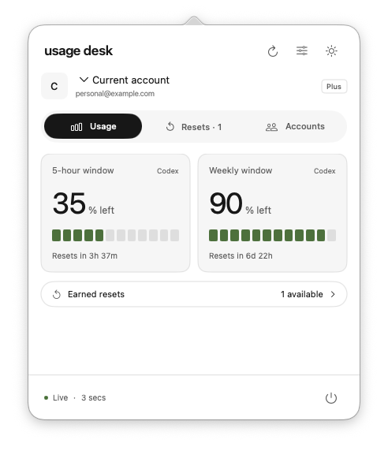

For macOS
Codex usage,
one click away.
Usage Desk is a free, open-source Mac app for checking Codex quotas, reset times, and multiple accounts.
Source only. Requires macOS 14+, Swift 6+, and the Codex CLI.

A quick check.
Then back to work.
See what’s left
Five-hour and weekly quotas, with a countdown to each reset.
Keep accounts together
Connect separate OpenAI accounts and choose whose usage to view.
Find available resets
See the earned resets reported by Codex, alongside your usage.
Set up once.
Check any time.
A native Mac app that works with your installed Codex CLI.
Build and open Usage Desk
Follow the build instructions. Your signed-in Codex CLI account appears automatically.
Add your other accounts
Choose Add account, select a browser profile, and sign in with OpenAI.
Check from the menu bar
Usage refreshes in the background. Click the menu bar to see the latest.
Local by design.
Open by default.
Account credentials stay on your Mac. Codex connects directly to OpenAI. Usage Desk has no analytics or intermediary server.
Before you install.
Can I download an installer?
Usage Desk is currently available as source code only. Build it on your Mac using the instructions below. A signed, notarized installer is not available yet.
What do I need?
macOS 14 or later and a recent Codex CLI signed in with a ChatGPT account. Building from source also requires Swift 6 or newer. Chrome is optional.
Does it show every ChatGPT limit?
It shows the usage windows and earned resets returned by Codex. ChatGPT model or feature limits that Codex doesn’t expose won’t appear here.
Can I monitor multiple Codex accounts?
Yes. Connect each OpenAI account separately, optionally choosing a Chrome profile for sign-in, then select whose Codex usage to view. Credentials stay on your Mac.
Does choosing an account switch Codex too?
It selects the usage you’re viewing in Usage Desk. Your active Codex desktop and CLI login stay unchanged.
Can Usage Desk redeem an earned reset?
Usage Desk displays the earned resets returned by Codex. It does not redeem them or run model requests.
Is it free?
Yes. The app and its original artwork are MIT licensed. Codex and ChatGPT account plans are separate.
Build Usage Desk.
Currently available as source code.
A prebuilt macOS installer is not available yet.
Requires macOS 14+, Swift 6+, and a recent Codex CLI signed in with a ChatGPT account.
Build from source
Get the source from GitHub, then open the project folder in Terminal and run:
zsh scripts/build.sh
open "dist/Usage desk.app"Use Xcode Command Line Tools with Swift 6 or newer. The project README covers requirements and account setup.